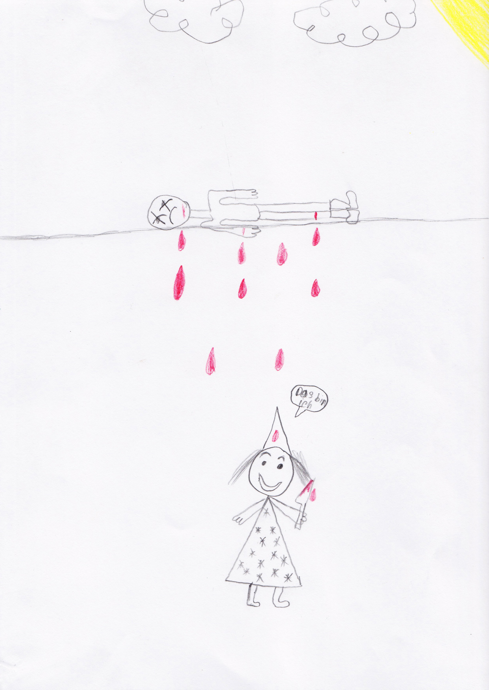
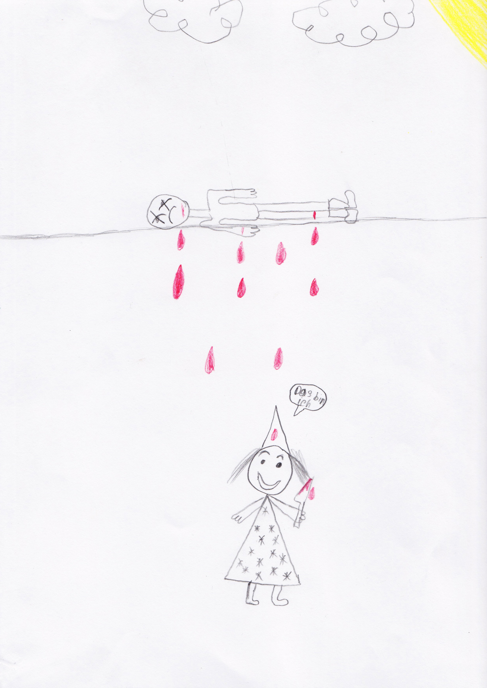

The Concept of Fear
AbstractVery few people understand the powerful emotion of fear and why it distorts our perceptions. Fear manifests itself in many different ways. It accompanies humans in everyday life. It can be as small as a bee. It can be as big as an elephant. It can be as complex as existential anxiety in a human.
Fear is a deeply wired reaction evolved over the history of biology, protecting organisms against perceived threat to their integrity or existence.
It is personal, powerful and a raw emotion. It can make your whole body stop from working or it can be the fuel that drives you. Fear leads us more often than not into irrationality, unpredictable behaviour and madness. The emotion of fear has a commanding moral position within the society of the 21st century. Today, larger systems of fear, such as politics, religion and the media are feeding human society and influence us in a detrimental way. Fear can be misused in all these systems of power in order to control, manipulate and divide society, which benefits the ones in positions of power. Fear is real and illusion at the same time.